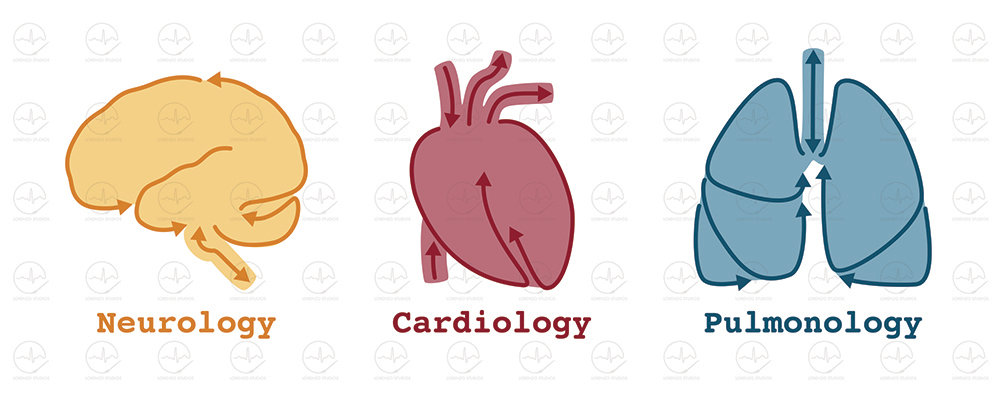

Medical Icons
These graphic icons represent three departments of a medical center and may be used across multipe media, including department business cards, door identifiers, letterhead, and email signatures.
Arrows are incorporated into the icons to abstractly reflect the physiology of the brain, heart, and lungs.